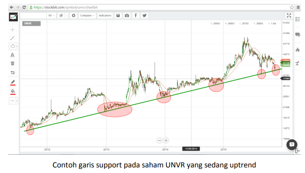
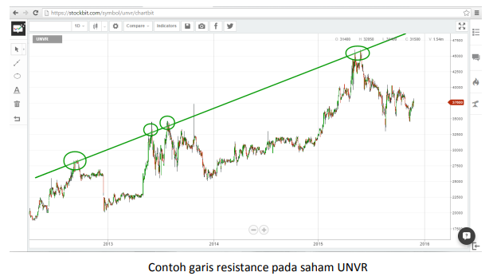
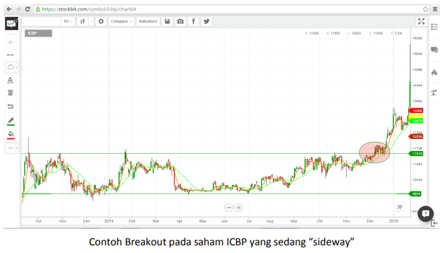
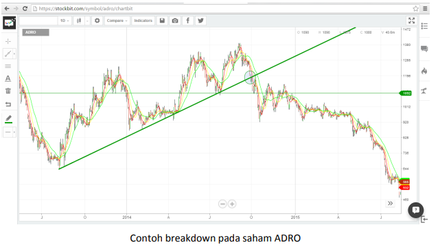
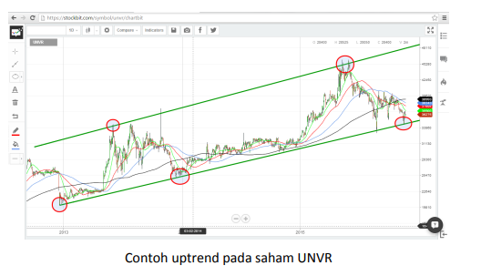
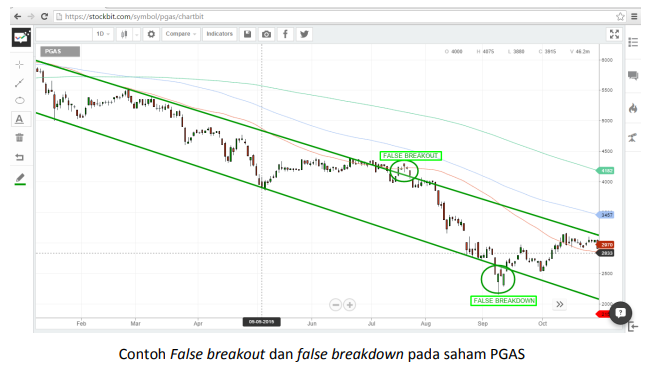

Istilah-Istilah yang Terdapat Pada Analisis Teknikal
Support and Resistence
Support adalah titik harga bawah, dimana pada level tersebut penurunan harga suatu saham memiliki probabilitas besar untuk tertahan dan memiliki potensi besar untuk berbalik naik (Rebound). Garis support juga sering digunakan para trader untuk menentukan waktu yang tepat untuk membeli suatu saham.

Resistance adalah titik harga atas dimana pada level tersebut kenaikan harga suatu saham memiliki probabilitas besar untuk tertahan dan memiliki potensi besar untuk berbalik turun (Correction). Garis resistance juga sering digunakan oleh para trader untuk menentukan level profit taking.

Breakout and Breakdown
Breakout adalah istilah yang dipakai ketika suatu harga saham bergerak menembus level resistancenya. Istilah-istilah lain yang sering dipakai antara lain “tembus atas” dan “break up”. Saham breakout mempunyai probabilitas besar untuk terus melanjutkan penguatannya. Garis resistance yang telah berhasil ditembus selanjutnya akan dianggap menjadi garis support, dan harus kembali dilakukan analisis untuk mencari target harga/resistance selanjutnya.

Resistance adalah titik harga atas dimana pada level tersebut kenaikan harga suatu saham memiliki probabilitas besar untuk tertahan dan memiliki potensi besar untuk berbalik turun (Correction). Garis resistance juga sering digunakan oleh para trader untuk menentukan level profit taking.

False Breakout/False Breakdown
Dalam beberapa kasus, ada saham yang telah menembus level support atau resistancenya, namun tidak lama kemudian kembali turun ke bawah level resistancenya atau naik di atas level supportnya sehingga penembusan itu hanya bersifat sementara dan berkesan menipu.
Trend Saham: Uptrend, Downtrend, dan Sideways
Uptrend adalah keadaan dimana pergerakan harga saham cenderung mengalami kenaikan. Yang dimaksud kenaikan tidak harus harganya yang terus naik, tapi pola pergerakan harganya membentuk higher low dan higher high, yaitu dimana puncak harga yang terbaru harus lebih tinggi dari puncak harga yang sebelumnya, dan kalaupun mengalami koreksi, koreksi harga yang terbaru tidak lebih rendah dari koreksi harga terdahulu.

Downtrend adalah keadaan dimana pergerakan harga saham cenderung mengalami penurunan. Yang dimaksud penurunan tidak harus harganya yang terus turun, tapi pola pergerakan harganya membentuk lower low dan lower high, yaitu dimana puncak harga yang terbaru lebih rendah dari puncak harga yang sebelumnya, dan pada saat koreksi, koreksi harga yang terbaru lebih rendah dari koreksi harga terdahulu.

Sideways adalah keadaan dimana pergerakan harga saham cenderung datar. Ciri utama trend sideways adalah saham hanya bergerak dalam rentang harga tertentu, tidak membuat harga tertinggi baru atau harga terendah baru.